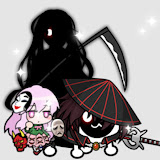
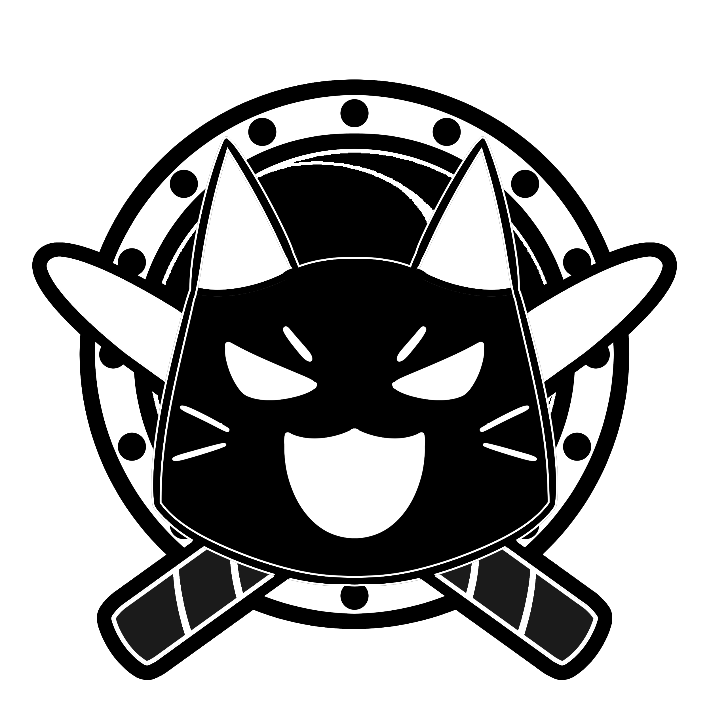

英雄榜
以下玩家使用「逗貓棒」成功挑戰段位道場，榮登英雄榜

小咔 くになか
達人（2024 段位道場）

雪貓
超人（2024 段位道場）
名人（2025 段位道場）
太鼓の達人 専用鼓棒 — 職人手作の音を、あなたに。
以下玩家使用「逗貓棒」成功挑戰段位道場，榮登英雄榜
達人（2024 段位道場）
超人（2024 段位道場）
名人（2025 段位道場）
你好，我是「雪貓」，一位熱愛太鼓達人的玩家兼鼓棒製作者。
每一副鼓棒都經過微調與試打調整，為的是讓每位玩家都能感受到鼓棒帶來完美的感受。
— ねこ 🐾